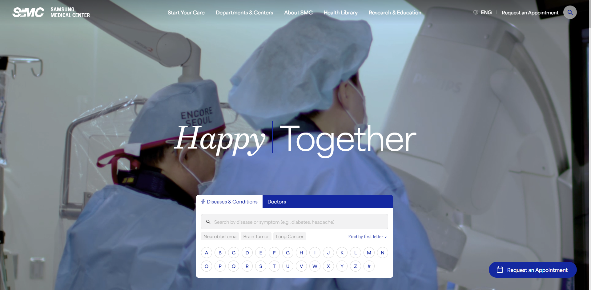
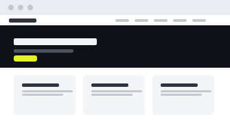

01문제
무엇이 문제였나
[원고 대기] 개편 과정에서 검색 관점으로 확인해야 했던 문제를 한 문장으로
공개 소개는 영문 사이트 개편에서 검색 관점의 진단 역할을 설명합니다. 환자 정보나 의료적 효과에 대한 주장을 포함하지 않습니다.

02원인
왜 그랬나
-
01
구조
[원고 대기] 원인 한 문장
-
02
콘텐츠
[원고 대기] 원인 한 문장
-
03
기술
[원고 대기] 원인 한 문장
03개입
엑셀리언트는 무엇을 했나
- 수행 항목
- [수행 기록 확인]
- 산출물
- [산출물명]
- 협업 범위
- [협업사 범위 확인]
04변화
무엇이 달라졌나

정량 결과
공개 전
원천 자료와 비교 조건을 확보한 뒤 공개합니다.
05체계
무엇이 남았나
- 운영 주체
- [확인 필요]
- 갱신 주기
- [확인 필요]